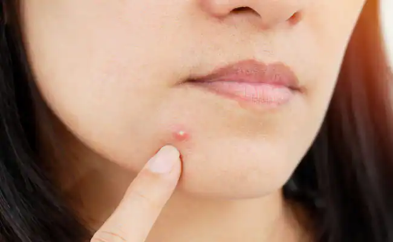

Prince
13 Natural Dry-Skin Remedies You Can DIY at Home
The list of culprits that cause dry skin is a long one, from daily bathing habits (think hot showers and scrubbing yourself dry with a towel) and wicked winter weather to a lack of natural oils in your skin as you age.
The good news is that unless you’re managing a skin condition, you may not need to visit a dermatologist to soothe dry skin. Instead, you might consider incorporating a home remedy to your skin-care routine.
n fact, the ingredients for these dry-skin fixes may already be in your kitchen. Several of the ingredients we include below, such as coconut oil, tea, and aloe vera, are often collectively referenced as “remedies,” though they have been used for centuries as homeopathic medicines in cultures worldwide. Importantly, though, if you are managing an underlying skin condition that may be causing your dry skin, be sure to consult a board-certified dermatologist before you try any home remedy. Doing so can help you avoid worsening dry skin.

“Home remedies are great for many skin types, especially if you are in a pinch or opt for alternative skin-care remedies,” says Jennifer Adell, a licensed aesthetician and the senior aesthetician at New Beauty and Wellness in Westport, Connecticut. “However, if you are experiencing chronic skin conditions such as rosacea, psoriasis, and cystic acne, consult with an aesthetician or dermatologist.”
Why Opt for a Natural Dry-Skin Remedy Rather Than Buy a Product?

If long ingredient lists concern or confuse you, a home remedy may be worth trying. Over-the-counter products can have a ton of ingredients — they not only contain the active moisturizing products, but they also have preservatives, says Christine Poblete-Lopez, MD, the residency program director and vice chair of the department of dermatology at the Cleveland Clinic in Ohio.
That’s often the case for water-based products, because bacteria grow easily in these formulas, according to Michigan State University. But while well intentioned, these preservatives, not to mention additives such as alcohol and fragrances, can contribute to irritation, dry skin, and sometimes allergic reactions.
ou may prefer to keep your skin-care routine simple, especially if you have allergies or a sensitive complexion. For example, unlike preservative-laden water-based lotions and creams, oils have a natural base, making them a good choice for dry skin when a skin condition isn’t involved.
Keep in mind, though, that oils and other over-the-counter remedies aren’t regulated by the U.S. Food and Drug Administration (FDA), so they aren’t guaranteed to be risk free. It’s always a good idea to check with a dermatologist before adding any new DIY recipe to your skin-care routine, to be safe.
How Natural Remedies Can Soothe Dry, Irritated Skin
Your skin naturally produces oil, called sebum, which protects it from moisture loss, but everyday actions — such as forgetting to put on moisturizer or washing your hands with a drying soap — can strip away these natural oils. For people without acne, oils can restore skin’s sheen and protective moisture barrier.
Dermatologists generally recommend that people with acne choose an oil with care, as acne is usually caused by overproduction of sebum, per the American Academy of Dermatology Association (AAD). One option is tea tree oil, as some evidence supports the idea that tea tree oil may improve mild to moderate acne — including a past randomized controlled study and an uncontrolled pilot study published in the August 2017 Australasian Journal of Dermatology — though you’ll want to consult with a dermatologist before beginning a new acne treatment. Tea tree oil in particular may cause skin irritation.
There are many ways to reap the moisturizing benefits of oils, either on their own or with other ingredients, to make a DIY nourishing mask or an exfoliating rub. Poblete-Lopez suggests that castor oil, lavender oil, and avocado oil may be good ingredients for certain people with dry skin.
Coconut oil is another oil you may have in your kitchen cabinet that can be a good choice for those not prone to acne. In one previous randomized controlled trial, people with atopic dermatitis — a type of eczema and an allergic skin condition characterized by dryness and itching — saw an improvement in symptoms when they used virgin coconut oil on their skin.
Aloe vera, a houseplant with natural healing properties, is also effective as a natural moisturizer. According to a review published in the June 2019 Plant Foods for Human Nutrition, aloe vera gel contains mucopolysaccharides, such as hyaluronic acid, which help lock moisture into the skin and make this another naturally moisturizing skin-care ingredient you’ll want to try.
13 Natural, DIY Remedies to Moisturize Dry Skin
The next time your dry skin needs a little TLC, try one of these easy at-home remedies
1. Whip Up an Olive Oil Moisturizer to Soothe Dry Skin
f you need extra moisture fast, Adell recommends extra-virgin olive oil as an alternative to your moisturizer — but only if you’re in a pinch.
“Olive oil contains vitamin E, antioxidants, squalene, and other properties that repair damaged skin,” she says. Adell also notes that this may not be a good choice for acne-prone skin, because of the risk of clogging your pores.
Before applying olive oil directly to your skin, double-check whether this solution is right for you by consulting a dermatologist. As research published in December 2017 by the International Journal of Molecular Sciences notes, olive oil may reduce inflammation, but applying it topically on its own may damage your skin barrier.
If you decide to try olive oil, Adell recommends a pure, or regular, form that isn’t refined with other oils, and to use it sparingly, such as applying a few drops to a face mask, or massaging the oil into extremely dry areas like your elbows.
2. DIY a Rich, Creamy Avocado Mask
A homemade mask of avocado is another natural way to soothe dry skin, and Adell has used it at home in her own family. “This face mask is chock-full of antioxidants [and] probiotics that will promote healthy, glowing skin,” she says. She recommends combining ½ avocado with ¼ cup plain Greek yogurt (which may improve skin texture because of its lactic acid content, according to a review in a 2020 issue of Current Pharmaceutical Biotechnology), along with a drizzle of manuka honey and 1 teaspoon of turmeric for potential anti-inflammatory benefits and to improve symptoms of inflammatory skin conditions such as eczema, per a separate review in the September 2019 Nutrients. Apply the mixture to clean skin and let it set for 5 to 10 minutes before rinsing off
As for the other half of the avocado, eat it! A small pilot study in the September 2022 Journal of Cosmetic Dermatology found that a group of female participants who ate an avocado daily increased their skin elasticity and firmness.
Another method used in another study published in the Journal of Cosmetic Dermatology, in September 2020, combined avocado oil with water and saffron extract. Researchers found that this combination rejuvenated the skin and reduced the appearance of wrinkles, though it’s not clear whether any significant moisturization was noted.
3. Make a Natural Coconut Oil and Sugar Scrub
To treat dead skin cells that might be giving your skin a dry texture and appearance, you may consider a gentle homemade sugar scrub. Michigan State University recommends combining 1 cup of brown or granulated sugar with ½ cup of coconut oil. If you want, you can add an essential oil like lavender, which lends a natural fragrance and may promote relaxation and decrease anxiety, as a randomized controlled trial in the January 2022 Journal of Integrative and Complementary Medicine suggested. Gently rub the scrub into your skin for up to 30 seconds, then wash it off with lukewarm water. Last, the AAD recommends using a soothing moisturizer to lock in the benefits of freshly exfoliated skin
Keep in mind that physical, or mechanical, exfoliation of this type may not be suitable for all skin types. The AAD doesn’t recommend scrubs for irritated, acne-prone, or sensitive skin.
Adell cautions against the use of sugar scrubs on sensitive skin, especially on the face. “The skin on your face is far more delicate than your body, so physical exfoliation can easily cause irritation and sensitivity,” she says. “My go-to exfoliation methods use chemical peel pads or enzyme powders.”
4. Create an Easy Oatmeal Soak to Calm Your Skin
A cup of oatmeal in a warm bath can naturally rehydrate dry skin, Poblete-Lopez says. "The oat product itself is soothing," she explains, and it helps your skin retain moisture from the bathwater. Or, for a mess-free soak, tie the oats to your faucet in pantyhose and run your bathwater through them.
If you have eczema, oatmeal may offer relief from dry, inflamed, or irritated skin associated with both atopic and contact dermatitis, says DermNetNZ. In a double-blind study published in March 2020 in Clinical Cosmetic, and Investigational Dermatology, researchers observed that colloidal oatmeal treated hand eczema with its anti-inflammatory, soothing, and protective effects.
5. Exfoliate Your Face With a Homemade Oatmeal Honey Mask
Oatmeal makes a great exfoliator or mask, too. Mix 2 tablespoons of oats with 1 tablespoon of honey and a dash of water. You can use it just to exfoliate and wash it off right away, or leave it on for 15 to 20 minutes as a soothing, hydrating mask. As a review in the October 2021 Open Life Sciences pointed out, honey may have antimicrobial properties that may also help accelerate wound healing.
6. Apply Coconut Oil Before Bedtime
Coconut oil, which a review in the July 2022 Journal of Drugs in Dermatology noted has roots in African and Indian cultures, is a popular home treatment for healthy hair and skin. “Coconut oil becomes a solid at room temperature, so use it as a moisturizing cream at bedtime or anytime,” recommends Tsippora Shainhouse, MD, a board-certified dermatologist at SkinSafe Dermatology and Skin Care in Beverly Hills, California. “For chapped heels and hands, apply the oil, then layer with thick socks or nonlatex gloves.”
7. Consider Using Nourishing Oils
“Natural oils are great for moisturizing the skin and helping to recreate the natural skin barrier, which is often damaged by frequent hand and face washing with water and drying soaps that strip the skin of its natural protective oils,” Dr. Shainhouse says. Aside from olive oil or coconut oil, you can test out other natural oils that are free from irritants, including jojoba, argan, and avocado oils. To use, Shainhouse recommends adding a few tablespoons of the desired oil under running bathwater. Treat yourself to a short soak and gently pat your skin dry afterward to avoid removing all the oil.
But as research published in December 2017 in Women's Health suggests, bathing with oils may not be best for women because of vaginal health risks. Instead, you may consider applying a small amount of your preferred oil to your skin post-shower to keep it soft and moist.
8. Use Milk Compresses for Irritated Skin
“Milk has natural anti-inflammatory properties,” says Shainhouse. "It also contains lactic acid, a mild, natural exfoliant.” In a 14-day controlled study published in the August 2020 Journal of Clinical and Aesthetic Dermatology, the use of a lactic-acid and ceramide-containing lotion twice daily was found to significantly improve skin hydration while eliminating dead skin cells, which suggests lactic-acid products may provide exfoliating benefits. That said, longer-term research is needed to confirm these results.
Additionally, Adell notes lactic acid is “one of the most hydrating [alpha-hydroxy acids] on the market.” She says it’s one of the safer acids for sensitive skin, and may also be used during pregnancy.
To make a milk compress, Cincinnati Health Institute advises soaking a clean cloth (like a washcloth or a towel) in a bowl of cool milk, and holding it in place over any dry areas. Shainhouse recommends using these compresses on your skin for 5 to 10 minutes at a time. It’s especially helpful for irritated skin that’s itchy, too.
Lactic acid can sting cracked skin, though, so use with caution, per Harvard Health Publishing. “Feeling mild tingling is common, but if you experience burning, stop using it and talk to your dermatologist or aesthetician,” Adell says. While research in the September 2018 Dermatologic Therapy notes that lactic acid may be beneficial in restoring the skin barrier and treating related conditions such as eczema, you may want to avoid this remedy if you have an active flare-up with cracked skin.
9. Consider a Fruit Enzyme Cleanser or Exfoliant
Fruit enzymes can be a fun way to ease dry skin. “These alpha-hydroxy acids are great for gently exfoliating the superficial layer of dulling dead skin cells on the face and body,” says Shainhouse. And, as the FDA notes, AHAs not only help remove dead skin cells, but they may also improve the appearance of aging skin and your overall skin texture.
Shainhouse recommends a fruit-enzyme-infused wash or mask twice per week. According to research published in November 2021, some good fruit enzymes to look for include bromelain (found in pineapple), papain (found in papaya), and ficain (found in figs).
10. Apply Aloe Vera to Dry, Irritated Skin
While often thought of as sunburn relief, aloe vera gel can be helpful during the dry winter months, too. It works by alleviating redness and irritation related to excess dryness, and it can even decrease signs of aging, as well as acne breakouts and skin injuries, according to previous research. Shainhouse cautions that some people develop allergic contact dermatitis, a type of eczema, to aloe, so you may want to perform a patch test before you apply it to a large area of skin.
11. Use Honey as a Spot Treatment for Dry Patches
Honey has emollient and humectant effects that can soften your skin and help it retain moisture, according to past research. It’s also an alternative treatment for a variety of skin conditions, including dermatitis, psoriasis, and dandruff.
Honey, and especially manuka honey, is also effective at healing wounds, according to another past review: It’s naturally antimicrobial, keeps the affected area moist, and has a thick consistency that works as a barrier against infection.
These properties make honey a good base for face mask recipes, and it can be a powerful spot treatment for patches of dry, irritated skin. (As Adell notes for the avocado mask, the addition of manuka honey increases wound healing while decreasing inflammation in the skin.) For best results, apply honey in small amounts to your face. Leave on for several minutes before rinsing it off.
12. Brew Tea Bags to Soothe Inflammation
If you already drink tea, you may be able to find other uses for tea bags you have in your pantry. Adell says this includes herbal teas like chamomile and jasmine as well as caffeinated green and black teas.
According to the Cincinnati Health Institute, black and green tea bags can have a cooling and anti-inflammatory effect on your skin, while black tea bags may help balance your skin’s natural pH level.
13. Get Back to Basics With Petroleum Jelly

Chances are you already have a jar of Vaseline or Aquaphor in your medicine cabinet. These contain petroleum jelly (also called petrolatum), which the AAD notes can help alleviate dry skin, prevent chafing, and support skin healing. Better yet, petroleum jelly may be safe enough to use all over the body, including on your lips and eyelids. Some people so swear by petroleum jelly that they slather it all over their face, leaving it on overnight, a practice called “slugging.”
You can apply petroleum jelly throughout the day as needed, but the AAD says it works best on damp skin. Avoid applying it to your face if you have acne-prone skin, as it may cause breakouts.
Prince
follow us on :-